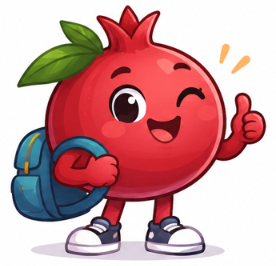
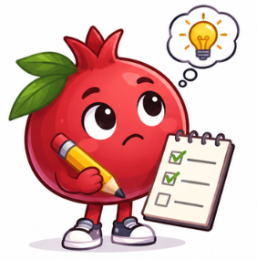

Ödevler, kitaplar
ve oyunlar
Öğrenciler, veliler ve öğretmenler için ortak dijital çalışma alanı.
Platformu keşfet
Bu platformda neler var?
Ödev Takip
Verilen ödevleri, teslim tarihlerini ve ödev durumunu takip edin.

MEBİ Kütüphanesi
6. sınıf örnek yazılı sorularına ve derslere göre hazırlık PDF’lerine ulaşın.
EBA Kütüphanesi
Bilim, teknoloji, eğlence ve oyun konulu kitap ve dergileri keşfedin.
Öğretmen Atölyesi
Zümrelerin afişlerini, ders kaynaklarını ve etkileşimli İngilizce oyunlarını açın.
Ödev Takip
Okul hesabınızla giriş yaparak sınıf ödevlerini ve teslim tarihlerini görüntüleyin.
Öğrenciler ve veliler
Öğrencinin kullanıcı adı ve şifresiyle giriş yapıp ödev durumunu ve bildirimleri takip edebilirsiniz.
Öğretmenler
Öğretmen hesabınızla size atanan sınıfların ödevlerini yönetebilirsiniz.
ÖĞRETMEN PANELİ
Sınıflarım
—Size verilen sınıfların ödevlerini yönetin.
Kayıtlı sınıflar
Henüz sınıfınız yok. İlk sınıfınızı yukarıdan oluşturabilirsiniz.
Sınıfın yanındaki düğmelerden öğrencileri, ödevleri, öğretmenleri ve takip tablosunu açabilirsiniz.
SINIF LİSTESİ
Öğrenciler
—Hazır öğrenci hesaplarını kodlarıyla seçip bu sınıfa ekleyin.
Hesap listesinden ekle
Birden fazla kod seçebilirsiniz. Öğrenci hesabı bu sınıfa bağlanır; varsa aynı kodlu kayıt korunur.
Kayıtlı öğrenciler
Bu sınıfa bağlanmış öğrenci hesabı yok. Hesapları getir düğmesiyle başlayın.
Bu sınıfın ödevlerini Ödevler bölümünden açabilirsiniz. Öğrenci hesabı yalnız aynı kodla eşleştirilen öğrencinin ödevlerini gösterebilir.
SINIF ÖDEVLERİ
Ödevler
—Sınıfınıza ödev ekleyin ve teslim tarihlerini takip edin.
Kayıtlı ödevler
Bu sınıfta henüz ödev yok. İlk ödevi yukarıdan ekleyebilirsiniz.
Ödevler teslim tarihine göre sıralanır. Sınıfa bağlı öğrenci hesapları bu ödevleri görebilir.
ÖDEV TAMAMLANMA DURUMU
Takip tablosu
Her öğrenci için ödev durumunu seçin: Beklemede, Tamamlandı veya Yapılmadı.
Sınıf sonuçları
Durum değişikliği seçim yaptığınızda kaydedilir. Beklemede: henüz sonuçlandırılmamış. Yapılmadı: öğretmen ödevin yapılmadığını belirtmiş. Güncel sonuçlar için Yenile’ye basın. Geniş tabloları sağa kaydırabilirsiniz.
ÖĞRENCİ PANELİ
Ödevlerim
—Bu öğrencinin sınıf ödevlerini ve teslim tarihlerini takip edin. Diğer öğrencinin ödevleri için onun hesabıyla giriş yapın.
Sınıf ödevleri
Öğrenci hesabınız henüz sınıf kaydıyla eşleştirilmedi. Öğretmeninizle iletişime geçin.
Güncel bildirimler
Güncel ödev durumları ve teslim tarihine üç gün veya daha az kalan ödevler.
Ödevler son teslim tarihine göre sıralanır. Ödev durumlarını yönetici günceller. Güncel durumları ve hatırlatmaları görmek için Yenile düğmesini kullanın.
OKUL HESABI
Giriş yap
Ödev Takip’i kullanmak için okul hesabınızla giriş yapın.
Öğretmeninizin verdiği başlangıç şifresiyle giriş yapın. Ardından Ayarlar’dan kendi şifrenizi belirleyebilirsiniz. Şifrenizi unuttuysanız öğretmeninizden sıfırlamasını isteyin.
HESABINIZ
Hesap kontrol ediliyor…
Hesabınız hazır.
Firebase bağlantısı hazırlanıyor…